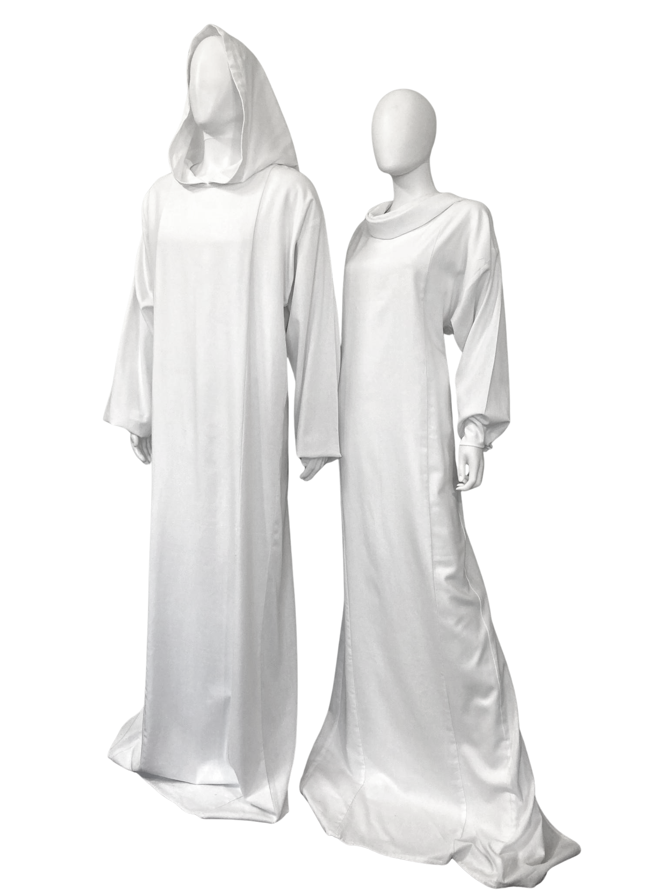

How will they be dressed?
We provide burial clothing for funerals and memorial services such as shrouds, burial robes & gowns. These can be used for cremations as well.
This can eliminate a lot of decisions while providing a natural feeling to the burial.
“Welcome to The Golden Thread. Our new website is live, but we’re still adding finishing touches. Full launch October 1st!”

What We Offer
Quality Materials
Describe fabric (e.g., natural linen/cotton blends), hand, and workmanship.
Multiple Sizes
Explain sizing (e.g., Regular and Oversized) and how to choose.
Collar Options
- Hooded
- Cowl
- No collar
Green Burial
State cremation suitability, natural materials, and eco considerations.